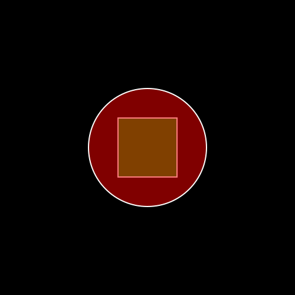
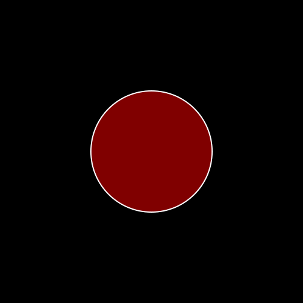
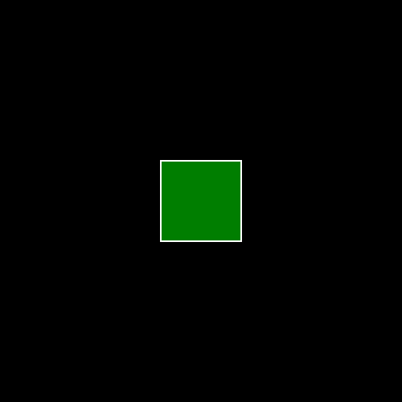

Tutorial 9: Morphing Javis Objects
There are multiple ways to morph an object in Javis.
- Using
morph_to(::Object)method. Any Object can be morphed to any other object using this method. - Using
morph_to(::Function)method. Similar tomorph_to(::Object)but morphs to a function instead. Can morph an object to a function that contains Luxor calls to draw what it should morphed into. - Specifying an Action with an
Animationalong withmorph()to make keyframed morphings. This helps making and timing a sequence of morph animations easier.
Morphing one object to another.
Like other animations morph_to(::Object) is to be used with action. To learn more about Actions refer to Tutorial 5. Here is a simple code snippet on how to use morph_to...
using Javis
video = Video(500,500)
nframes = 160
function circdraw(color)
sethue(color)
setopacity(0.5)
circle(O,100,:fillpreserve)
setopacity(1.0)
sethue("white")
strokepath()
end
function boxdraw(color)
sethue(color)
box(O,100,100,:fillpreserve)
setopacity(1.0)
sethue("white")
strokepath()
end
Background(1:nframes,(args...)->background("black"))
boxobj = Object((v,o,f) -> boxdraw("green"))
circobj = Object((v,o,f) -> circdraw("red"))
transform_to_box = Action(20:nframes-20, morph_to(boxobj))
act!(circobj, transform_to_box)
render(video,pathname="circ_to_box.gif")
If you aren't familiar with this syntax (v,o,f)-> circdraw("red") its an "anonymous" function or sometimes called a lambda function. Basically a nameless function that is written on the spot in that line of code . One might as well use any other function func in place of it (which takes at least 3 arguments video,object,frame). Elsewhere in the docs/tutorials you will come across something of the form Object( (args...) -> ("some code here") ). This is slurping and is similar to packing *args in python.
We created two objects circobj and boxobj . circobj ofcourse is a circle because its drawing function (v,o,f) -> circdraw("red") draws a circle, with a color=red, filling at 0.5 opacity, and then makes a white outline (stroke). boxobj's function draws an opaque green box, with white outline.
This Object function is called repeatedly at render-time at every frame that the object exists to draw this object. The appropriate video,object, and frame are passed to this function at render time. Javis then has other tricks up its sleeve to scale/move/morph whats going to be drawn depending on the frame and object to effect out animations through Actions. This is roughly the idea behind Javis's Object-Action mechanism
We defined a transform_to_box Action which runs from frame 20 to lastframe-20 . The Action morphs whatever object its acted upon, into what looks like boxobj. Note that boxobj and circobj are separate objects all the time, even after the Action (it just happens that they overlap each other). As the Action keeps getting applied at render time frame by frame, the "drawing" of circobj starts to look like boxobj's drawing.
The Action is applied to the circobj with the act! function.
Note that the boxobj is present throughout as the circobj is morphing. If you want to hide it you can set its opacity to 0 with another action (to make it disappear) and set its frames to be drawn for 1 frame only (for efficiency).
Background(1:nframes,(args...)->background("black"))
boxobj = Object(1:1 , (args...) -> boxdraw("green") )
circobj = Object(1:nframes,(args...) -> circdraw("red"))
transform_to_box = Action(20:nframes-20, morph_to(boxobj))
hide_action = Action(1:1, (args...)->setopacity(0.0) )
act!(circobj, transform_to_box)
act!(boxobj, hide_action)
render(video,pathname="circ_to_box_hidden.gif")However you can directly specify a shape an object has to morph to without making an Object using morph_to(f::Function) i.e passing a function as an argument.
Morphing an Object using a Function
Background(1:nframes,(args...)->background("black"))
#boxobj = Object(1:1 , (args...) -> boxdraw("green") )
circobj = Object(1:nframes,(args...) -> circdraw("red"))
transform_to_box = Action(20:nframes-20, morph_to(boxdraw,["blue"]))
#hide_action = Action(1:1, (args...)->setopacity(0.0) )
act!(circobj, transform_to_box)
#act!(boxobj, hide_action)
render(video,pathname="circ_to_box_func.gif")
Here we have morphed the circle without defining an object to morph to. Rather the shape it has to morph into is given by a Function. The general syntax is morph_to(fn::Function,args::Array=[]) . args is an array of arguments that is to be passed to the function. Here we morph circobj to a shape that would is drawn by boxdraw("blue"). Morphed Objects can be furthur morphed into other shapes by carrying out another Action further in the timeline.
Keyframed morphs using Animations.jl
Another mechanism for morphing is by passing morph() to Action along with an Animation For a tutorial on how to use Animations.jl look at Tutorial 7,
using Javis
using Animations
video = Video(500,500)
nframes = 160
function circdraw(color)
sethue(color)
setopacity(0.5)
circle(O,50,:fillpreserve)
setopacity(1.0)
sethue("white")
strokepath()
end
function boxdraw(color)
sethue(color)
box(O,100,100,:fillpreserve)
setopacity(1.0)
sethue("white")
strokepath()
end
function stardraw()
sethue("white")
star(O,100,5,0.5,0.0,:stroke)
end
Background(1:nframes+10,(args...)->background("black"))
boxobj = Object(1:nframes+10 , (args...) -> boxdraw("green") )
anim = Animation([0,1],MorphFunction[(boxdraw,["green"]),(circdraw,["red"])] )
action = Action(1:nframes,anim,morph())
act!(boxobj,action)
render(video,pathname="box_to_circ_hidden.gif")Take a look at anim. It is of type Animation. First lets look at a simpler instance of Animation.
Ex:1
Animation([0,1],[2,4])Think of Animations like a "map" or a "function" (in the math sense) thats maps values from its first argument ([0,1] above) to another set of values ([2,4]) . This means that 0 gets mapped to 2 and 1 gets mapped to 4 and all values inbetween are linearly interpolated. Another Example
Ex:2
Animation([0,0.3,1],[3,4.5,7])This animation maps 0 to 3 , 0.3 -> 4.5 and 1->7. And all values inbetween are linear interpolations.
Take a look at the Animations.jl package for an indepth explanation on how to have different interpolations to make your animations look way cooler. ( for example the sineio interpolaation is slow at first speeds up in between and gradually slows to a halt )
One can in principle provide values beyond 0 and 1 for the first argument however Javis requires Animation objects to have the first argument to be from 0 to 1. This Animation object is passed to an Action, and Javis interprets 0 to be the first frame of the Action and 1 to be the final frame of the Action.
In the big code snippet above we can see that the second array passed to Animation is an array of MorphFunctions. MorphFunction is a struct . This struct has 2 fields. The fields are func and args. These arguments are used to specify drawing functions and the arguments to be passed to them , The Array of MorphFunction passed to the Animation defines a sequence of shapes/drawings that the Object should be morphed into one by one in that order. Each shape/drawing is what would have been got by calling func(args...) of the respective MorphFunction. In the example above there are only two in shapes in the sequence a green box and a red circle (boxdraw("green") and circdraw("red")). Typically the first MorphFunction should draw the same thing that Object is.
The general idea of whats going on is we are making an Animation that maps 0 (i.e the first frame of the action.) to MorphFunction(boxdraw,["green"]) and 1 (last frame of the action) to MorphFunction(circdraw,["red"]) and Javis handles the interpolation between them.
Thus we have made an Animation called anim. Then we made an action with this anim. We called it action . Then we applied the action on our object boxobj to get ...
The way of morphing shines when you have to do multiple morphs in a sequence and with different timings. Lets look at another example taking object to morph box(initial shape) -> star -> circle in a sequence.
Change the lines describing the animation to
anim = Animation([0, 0.7, 1],MorphFunction[(boxdraw, ["green"]), (stardraw, []), (circdraw, ["red"])])stardraw draws a white star without fill. The function does not take an argument and therefore the Tuple with stardraw should have an empty Array at its second index. If your drawing functions do not take any arguments you can pass it as function itself, and need not wrap it in a Tuple.
Ex. suppose mydraw1 , mydraw2 and mydraw4 take a color as an argument but mydraw3 does not take any arguments.
anim = Animation([0, t1, t2, 1],MorphFunction[ (mydraw1,["red"]), (mydraw2,["blue"]), mydraw3, (mydraw4,["black"]) ])A third way to pass functions to morph into is to simply pass a function an its arguments in a Tuple
anim = Animation([0, t1, t2, 1],MorphFunction[ (mydraw1,"red"), (mydraw2,"blue"), mydraw3, (mydraw4,"black") ])When passed this way the first element of the Tuple is taken to be the function and the subsequent elements are the arguments to be passed to the function.

What we see now is from the beginning to 0.7 fraction of the Action's frames it carries out the morphing from a boxdraw("green") to stardraw(). And the remainder of the Action's frames it morphs from stardraw() to circdraw("red"). Once again , do look up Animations.jl and Tutorial 7 to see how you pass easing functions to manipulate the timing of animations (for example ... initially slow - fast in the middle - slow in the end) . Now you know a bit about Morphing . Remember just like any other Action you can stack morphing actions with other Actions (translations, scaling etc) to bring about effects you desire.
Author(s): John George Francis (@arbitrandomuser) Date: May 28th, 2022
Tag(s): action, morphing, object, animation